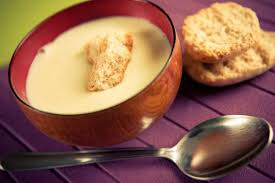

Crema de patata

Descripción
Ésta es una crema de patata especial, no apta para dietas
Ingredientes
- Apio
- Bacon
- Cebolla
- Ajo
- Patata
- Caldo de pollo
- Mantequilla
- Harina
- Nata
- Cilantro
- Estragón
- Sal y Pimienta
Pasos
- Ordena los ingredientes para su preparación
- Cocina el bacon a fuego medio y luego déjalo escurrir
- Añade a la grasa del bacon de la sarten la cebolla y el apio
- Añade el ajo
- Añade la patata y cubre con el caldo de pollo
- Mientras, calienta la mantequilla y mezcla con la nata y la harina
- Añade el cilantro y el estragón a la mezcla
- Lleva la mezcla a ebullición y añadela a las patatas
- Una vez mezclado, llevalo a la batidora y hazlo puré
- Añade sal y pimienta al gusto
- Sirve caliente y disfruta
Go back HOME